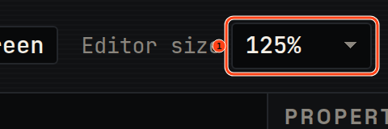
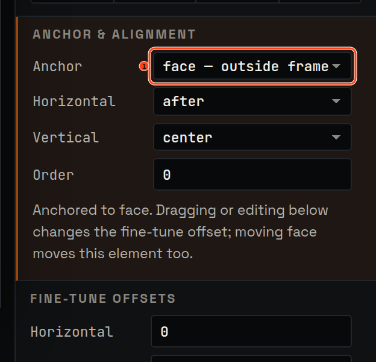
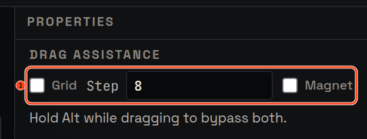
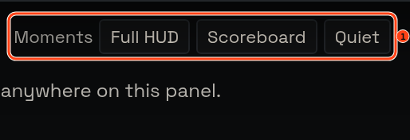

Release 2
Place, don't pixel
Placing a HUD element is now a relationship rather than a pair of coordinates: anchor it to a parent or a screen edge, and let pos_x/pos_y be the fine-tune they were always meant to be. Drags snap to a grid and to other elements' edges, the editor scales to the screen you actually work on, and named demo moments put a real frame in front of you instead of an empty one.
The editor scales to your screen
A UI-scale control sets the editor chrome to a size you can work in, and it survives a reload. Moving the window between monitors keeps the layout intact. Before this release the editor was cramped at 1440p, and moving the browser to a second monitor could collapse the layout outright. You can work at the size your screen deserves, and the editor stays where you put it.

Anchor first, nudge second
The inspector leads with the anchor — a parent element or screen edge, an alignment and an order — and the stage draws the relationship. pos_x and pos_y become the offsets from that anchor. Raw coordinate entry is still there when you want it. A drag reads as "re-anchor plus offset" instead of a number you have to reverse-engineer later.

Drags that land where you meant
Drags snap to a configurable grid and magnet to other elements' edges and centres, with guides showing what they caught. A visible toggle turns it off, and a held modifier bypasses it for one drag. Alignment stops being a test of patience — and the export still contains final positions and nothing else.

Demo moments worth aiming at
Named preset moments open a match demo at a deterministic point — a frame with full HUD activity, a scoreboard moment, a quiet moment. Before, pause existed, but you had to wait for a useful frame to appear before there was anything to line the HUD up against. The frame you need is one click away instead of a wait, and it is the same frame every time.

Your configs do not change. Exports remain byte-compatible ezQuake configs, with untouched lines preserved byte-for-byte.